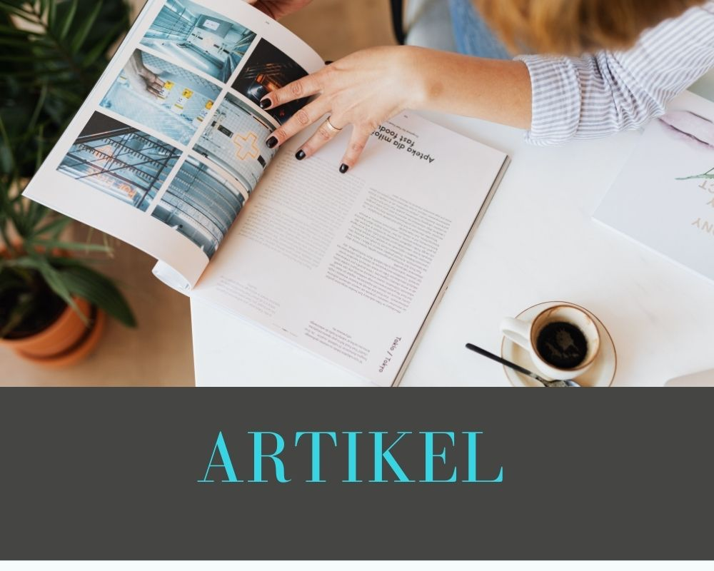

1. Preservasi
Preservasi diartikan sebagai pelestarian, preservasi ini mencakup semua pertimbangan manajerial dan keuangan termasuk ketentuan penyimpanan dan akomodasi, susunan, kebijakan, teknik dan metode pelestarian bahan perpustakaan serta informasi yang terkandung di dalamnya. Preservasi adalah kegiatan yang terencana dan terkelola untuk memastikan agar koleksi perpustakaan dapat terus dipakai selama mungkin. Pada dasarnya Preservasi itu upaya untuk mematikan agar semua bahan koleksi cetak maupun non cetak pada suatu perpustakaan bisa tahan lama dan tidak cepat rusak.

2. Konservasi
Konservasi artinya kegiatan untuk mengawetkan bahan perpustakaan. Konservasi terbagi menjadi 4 jenis, yaitu:
1) Konservasi aktif (active), merupakan tindakan yang berhubungan langsung dengan bahan perpustakaan, misalnya: membuat kotak pelindung buku dan membungkus ulang, menjilid ulang dengan mengganti lembar pelindung (end paper) dengan kertas bebas asam, membersihkan dokumen, maupun upaya menetralkan asam pada kertas.
2) Konservasi pasif (passive), merupakan kegiatan untuk memperpanjang umur bahan perpustakaan. Hal ini misalnya: memonitor kebersihan ruang penyimpanan koleksi, mengkondisikan udara yang selalu bersih bebas polusi, penggunaan AC yang stabil, dan mengontrol kondisi fisik maupun kondisi lingkungan di sekitar tempat koleksi tersebut disimpan.
3) Konservasi preventif (preventive), merupakan tindakan dalam rangka mengoptimalkan kondisi lingkungan perpustakaan untuk memperpanjang umur bahan perpustakaan. Hal ini misalnya: menyusun kebijakanyang jelas terkait pelatihan petugas perpustakaan.
4) Konservasi kuratif (curative), merupakan tindakan untuk mengembalikan struktur fisik dan fungsi dari sebuah dokumen dengan cara menyelamatkan kondisi fisik bahan perpustakaan agar terhindar dari kerusakan lebih lanjut.
3. Restorasi
Restorasi atau perbaikan, menekankan pada pertimbangan dan cara yang digunakan untuk memperbaiki bahan pustaka dan arsip yang rusak. kegiatan yang dilakukan agar manuskrip yang rusak agar tetap dapat digunakan yaitu dengan cara memberi sampul, sedangkan untuk manuskrip yang kertasnya sudah rusak parah diberikan kotak untuk menghindari kertas tersebut hancur. Sedangkan untuk kertas yang sudah robek ditambal menggunakan kertas khusus agar tulisan yang ada tetap dapat dibaca. Dalam melakukan restorasi harus memperhatikan metode yang sesuai dan teknik bahan yang sesuai dengan bahan asli dokumennya, karena jika tidak sesuai maka hasil menjadi tidak seperti dokumen asli. Untuk menjaga keaslian dokumen, pada waktu membersihkan noda pada dokumen biasanya dengan penghilangan warna, namun kemudian jika saat membersihkan noda tetapi warna juga ikut hilang maka harus dilakukan pewarnaan ulang walaupun warnadokumen menjadi tidak asli lagi.